AI Daily · 2026-10-22 · Sources
中文 · English · Overview / 总览
Fixed cutoff / 固定截止 2026-10-22T08:03:02Z. Delayed discovery, validation and image acquisition are separate from source publication.
- S01 Claude Security now scans continuously and tracks fixes2026-10-21
- S02 Use Claude SecurityUndated; current read
- S03 Getting started with Claude SecurityUndated
- S04 Claude Security productUndated
- S05 October19 Library launch2026-10-19
- S06 Questions, KPIs, views and lineageUndated documentation
- S07 Reusable viewsUndated documentation
- S08 Data cleaning and approvalUndated documentation
- S09 Launch 08:00 ET October212026-10-21T12:00:00Z
- S10 Context, tasks, CRM and public-preview accessUndated documentation
- S11 Campaign workflow and statusUndated documentation
- S12 Slack approvals and disconnected-channel behaviorUndated documentation
- S13 Launch, shift coverage and limited availability2026-10-20
- S14 Assistant workflow and beta waitlistUndated documentation
- S15 Brand Profiling launch and source metadata2026-10-21T07:39:08Z
- S16 Existing brand reporting baselineUndated documentation
- S17 Citation tracking workflowUndated documentation
- S18 ONEKEY AI Agent first-version release2026-10-21
- S19 AI Agent workflow guide2026-10-14
- S20 AI Agent documentationDate not stated
- S21 AI Agent roadmap2026-09-01
- S22 从办公桌走上生产线，百度搭子升级了2026-10-21 19:04; timezone unspecified
- S23 新任务2026-10-20 · updated
- S24 企业版入门指引2026-09-01 · updated; background
- S25 自动化2026-10-20 · updated
- S26 百度搭子DuMate企业版Date not stated
- S27 KION original2026-10-21
- S28 KION / EQS issuer distribution original2026-10-21T11:41:00Z
- S29 KION / EQS original2026-03-16
- S30 General Motors original2026-10-21
- S31 OnStar originalundated, observed October22
- S32 General Motors original2026-09-25
- S33 OPPO Find X10 Series Global Launch2026-10-21
- S34 Global Launch eventDate not stated
- S35 ColorOS17Date not stated
- S36 FindX10earlybirdtermsDate not stated
- S37 Upcoming global launch2026-10-08
- S38 CORSAIR original2026-10-20
- S39 CORSAIR original2026-10-20
- S40 CORSAIR / Business Wire original2026-10-20
- S41 CORSAIR US Store originalobserved October22
- S42 The Verge / Nilay Patel and Allison Johnson original2026-10-21T12:00:00Z
- S43 Apple originalcurrent official product page
- S44 Apple US Store originalobserved October22
- S45 Therabody original2026-10-21
- S46 Therabody / PRNewswire original2026-10-21T13:00:00Z
- S47 Therabody originalcurrent public interface
- S48 AiMOGA originalOctober21 preorder period; exact publication clock unknown
- S49 AiMOGA issuer release original2026-10-17T10:27:00Z
- S50 Mitsubishi Electric Develops Machining System with Humanoid Robots and CNC2026-10-21
- S51 Technical release No.39462026-10-21
- S52 Accenture / TÜV SÜD original2026-10-21; page clock07:29 without timezone
- S53 BAND for Developers launch2026-10-21
- S54 BAND DesktopDate not stated
- S55 BAND Desktop documentationDate not stated
- S56 BAND pricingDate not stated
- S57 October21 daily launch board2026-10-21
- S58 Agent Pets launch and maker discussion2026-10-21
- S59 Agent Pets product and setupDate not stated
- S60 Privacy policy observed after cutoff2026-10-22
- S61 ilha maker launch and answers2026-10-21 listing
- S62 ilha product and pricingDate not stated
- S63 ilha privacy policy2026-10-18
- S64 ilha terms2026-10-17
- S65 The Brains launch2026-10-21 listing
- S66 The Brains repository and READMEDate not stated
- S67 Brain curation runbookDate not stated
- S68 Code license and content exceptionDate not stated
- S69 The Brains privacy2026-10-17
- S70 SuperCMO Skills v0.1.272026-10-21T12:24:13Z
- S71 Pin exact versions and clear plugin-directory warnings2026-10-21
- S72 Make dry-run and telemetry text match code2026-10-20 merge
- S73 SuperCMO Skills READMEDate not stated
- S74 Telemetry specificationDate not stated
- S75 SuperCMO public launch presentation2026-10-21
- S76 ProjectOps v4.72.02026-10-22T05:47:59Z
- S77 CLI referenceDate not stated
- S78 ProjectOps READMEDate not stated
- S79 MIT licenseDate not stated
- S80 RAGFlow 1.0.0-rc22026-10-16T09:49:48Z
- S81 Unify BuiltIn and Pipeline parser selection2026-10-09 merge; included rc2
- S82 Preserve parallel item state across resumes2026-09-30 merge; included rc2
- S83 Versioned quickstartv1.0.0-rc2 tag
- S84 Using Chat conversationsv1.0.0-rc2 tag
- S85 RAGFlow repositoryDate not stated
- S86 Agents CLI v1.11.02026-10-20T13:03:57Z
- S87 Agents CLI extension walkthrough2026-10-21
- S88 Using ExtensionsDate not stated
- S89 Authoring ExtensionsDate not stated
- S90 google/agents-cli repositoryDate not stated
- S91 Google Agents CLI v1.8.02026-09-30T11:25:05Z
- S92 Introducing TorchTPU2026-10-20T16:02:30Z
- S93 TorchTPU repositoryDate not stated
- S94 Hugging Face TorchTPU2026-10-20
- S95 TorchTPU is now open source2026-10-20
- S96 TPU agent suiteDate not stated
- S97 Contained: Oct21 LiteLLM release v1.107.0 compromised2026-10-21
- S98 LiteLLM1.107.0 Compromised: Python Startup Hooks2026-10-21
- S99 LiteLLM attacked again2026-10-21
- S100 LiteLLM AI GatewayDate not stated
- S101 Security report issue478262026-10-21
- S102 Collie v1.23.22026-10-21T21:18:33Z
- S103 Collie1.23.2 changelog2026-10-21
- S104 Claude survey and held-card field fixes2026-10-21T07:48:28Z
- S105 Multiline pi draft misread as menu #5532026-10-21T04:23:32Z
- S106 Proposed soft-wrap pi draft fix #5552026-10-21T04:58:59Z
- S107 Collie README at1.23.22026-10-21 release snapshot
- S108 Your AI agent fixed the bug, but what else did it change?2026-10-21
- S109 Patching Bugs README2026-10-20T20:16:47Z
- S110 Regression Hunt README2026-10-20T20:16:47Z
- S111 Regression Hunt system flow2026-10-20T20:16:47Z
- S112 Regression Hunt report definitions2026-10-20T20:16:47Z
- S113 Add regression-hunt and patching-bugs plugins #4712026-10-20T20:16:47Z
- S114 Repository licenseDate not stated
- S115 Privacy Preference Controls for Agentic Systems — abstract and submission history2026-10-21T16:03:02Z
- S116 Privacy Preference Controls for Agentic Systems — full paper2026-10-21T16:03:02Z
- S117 Privacy preference controls — eight executable prototypesDate not stated
- S118 Preference Is Not Permission — abstract and submission history2026-10-21T05:15:31Z
- S119 Preference Is Not Permission — full paper2026-10-21T05:15:31Z
- S120 Scriptorium — abstract and submission history2026-10-20T21:06:13Z
- S121 Scriptorium — full paper2026-10-20T21:06:13Z
- S122 Author-provided repositoryDate not stated
- S123 GenXR-Bench — abstract and submission history2026-10-21T00:28:16Z
- S124 GenXR-Bench — full paper2026-10-21T00:28:16Z
- S125 Author-provided GenXR-Bench repositoryDate not stated
- S126 Warping the Workspace — abstract and submission history2026-10-20T17:42:33Z
- S127 Warping the Workspace — full paper2026-10-20T17:42:33Z
- S128 TracePrism — abstract and submission history2026-10-20T17:04:41Z
- S129 TracePrism — full paper2026-10-20T17:04:41Z
- S130 TracePrism author supplementDate not stated
- S131 OSCE-SimBench / Virtual Standardized Patients — abstract and submission history2026-10-21T07:08:59Z
- S132 OSCE-SimBench / Virtual Standardized Patients — full paper2026-10-21T07:08:59Z
- S133 OSCE-SimBench code and runtime documentationDate not stated
- S134 Korean OSCE history-taking dialoguesDate not stated
- S135 VIRA-Bench — abstract and submission history2026-10-21T08:52:19Z
- S136 VIRA-Bench — full paper2026-10-21T08:52:19Z
- S137 Measurement-Guided VR Gaze Conversion — abstract and submission history2026-10-21T16:57:01Z
- S138 Measurement-Guided VR Gaze Conversion — full paper2026-10-21T16:57:01Z
- S139 Phoenix: Scaling Robotic Manipulation through Visual and Interaction RepresentationsDate not stated
- S140 Phoenix-MWA repository2026-10-20 codecommit; publicavailabilityclockunknown
- S141 LICENSEDate not stated
- S142 MWA-Phoenix发布报道转载2026-10-21T23:43:18+08:00
- S143 REVIEWS · scan sourceSee original source; undated where unstated
- S144 COMMUNITY · scan sourceSee original source; undated where unstated
- S145 COMMUNITY · scan sourceSee original source; undated where unstated
- S146 RESEARCH · scan sourceSee original source; undated where unstated
- S147 PATENT · scan sourceSee original source; undated where unstated
Claude Security
2026-10-21 · exact clock unknown · near-three-day · Vendor release and documentation; no independent security efficacy test
S01 — https://claude.com/resources/articles/claude-security-now-scans-continuously-and-tracks-fixes · S04 — https://claude.com/product/claude-security · S03 — https://academy.claude.com/tutorials/getting-started-with-claude-security · S02 — https://support.claude.com/en/articles/14661296-use-claude-security
Querri Library and Librarian
2026-10-19 · seven-day · Original issuer announcement and public product documentation; no authenticated execution or independent effectiveness test
S05 — https://querri.com/blog/introducing-the-querri-library-and-librarian/ · S06 — https://querri.com/product/library/ · S07 — https://querri.com/product/views/ · S08 — https://querri.com/product/data-cleaning/
ThinkingStreams
2026-10-21T12:00:00Z · main · Original issuer announcement and public product documentation; no authenticated execution or independent effectiveness test
S09 — https://www.prnewswire.com/news-releases/from-brief-to-campaign-thinkingstreams-launches-agentic-marketing-automation-for-b2b-teams-302914951.html · S10 — https://thinkingstreams.com/platform · S11 — https://thinkingstreams.com/docs/campaigns/overview · S12 — https://thinkingstreams.com/docs/integrations/slack-messaging
Homebase Assistant
2026-10-20 · near-three-day · Original issuer announcement and public product documentation; no authenticated execution or independent effectiveness test
S13 — https://www.businesswire.com/news/home/20261020439607/en/Homebase-Launches-Homebase-Assistant-Supercharging-Hourly-Teams-Across-Main-Street-America · S14 — https://www.joinhomebase.com/assistant
OtterlyAI Brand Profiling
2026-10-21T07:39:08Z · near-three-day · Original issuer announcement and public product documentation; no authenticated execution or independent effectiveness test
S15 — https://otterly.ai/blog/brand-profiling/ · S16 — https://otterly.ai/blog/better-brand-reporting-otterlyai/ · S17 — https://otterly.ai/blog/how-to-track-ai-search-engine-citations-sources/
ONEKEY AI Agent
2026-10-21 · release statement; clock unknown · near-three-day · Vendor release and documentation; no authenticated test
S18 — https://www.onekey.com/press-release/onekey-launches-ai-agent-conversational-vulnerability-investigation-sbom-and-component-exploration · S19 — https://www.onekey.com/resource/onekey-ai-agent-get-to-firmware-security-answers-faster · S21 — https://www.onekey.com/press-release/onekey-ai-agent-brings-ai-to-firmware-security · S20 — https://docs.onekey.com/platform-guide/features/ai-agent/
百度搭子 DuMate · enterprise update
2026-10-21 · date only; exact announcement clock unverified · near-three-day · Vendor documentation and issuer claims reported by a journalist; no authenticated execution test
S22 — https://www.21jingji.com/article/20261021/herald/f5e86757f7bc5a1268e5d755a9abe9e4.html · S24 — https://cloud.baidu.com/doc/Dumate/s/6mr4dii1s · S23 — https://cloud.baidu.com/doc/Dumate/s/5mqtdo3nt · S25 — https://cloud.baidu.com/doc/Dumate/s/Mmqubxvob · S26 — https://cloud.baidu.com/product/dumate.html
KION GXO / RoCaP deployment update
2026-10-21T11:41:00Z · main · Public primary-source claims; no independent execution test
S27 — https://www.kiongroup.com/en/Press/Press-Releases/Press-Releases-Detail.html?id=312356311 · S28 — https://www.tradingview.com/news/eqs:a797d2cc3094b:0-kion-showcases-how-physical-ai-delivers-measurable-customer-value-at-nvidia-gtc-berlin-2026/ · S29 — https://www.eqs-news.com/news/corporate-news/kion-brings-physical-ai-into-live-warehouse-operations-at-gtc-2026-in-san-jose-california/a7cce95a-95c4-4320-a628-aaca0bda40bd
OnStar AI Assistant / Connected Intelligence
2026-10-21; exact clock unverified · near-three-day · Public primary-source claims; no independent execution test
S30 — https://news.gm.com/home.detail.html/Pages/news/us/en/2026/oct/1021-onstar-ai.html · S31 — https://www.onstar.com/features/connected-intelligence · S32 — https://news.gm.com/home.detail.html/Pages/topic/us/en/2026/sep/0925-onstar-30.html
OPPO Find X10 · global availability
2026-10-21T14:00:00Z · main · Official launch, product and UK offer documentation; vendor claims, no independent device test
S34 — https://www.oppo.com/en/events/find-x10-series-launch/ · S33 — https://www.oppo.com/en/newsroom/press/oppo-find-x10-series-global-launch/ · S37 — https://www.oppo.com/en/newsroom/press/oppo-findx10series-upcoming-launch/ · S36 — https://www.oppo.com/uk/store/events/launch/find-x10-launch-event-early-bird-tc · S35 — https://www.oppo.com/en/coloros17/
CORSAIR SABRE v3 PRO PureVector / Aimlabs
2026-10-20; exact clock not retained · near-three-day · Public primary-source claims; no independent execution test
S38 — https://www.corsair.com/us/en/explorer/gamer/mice/purevector-the-future-of-aiming/ · S40 — https://www.businesswire.com/news/home/20261020206235/en/CORSAIR-Unleashes-PureVector-with-Testing-Showing-up-to-a-33-Reduction-in-Aiming-and-Correction-Time · S39 — https://www.corsair.com/us/en/explorer/gamer/mice/how-to-use-purevector/ · S41 — https://www.corsair.com/us/en/p/gaming-mouse/ch-931g500-ww/sabre-v3-pro-purevector-mg-wireless-gaming-mouse-black
iPhone Duo: independent interaction review
2026-10-21T12:00:00Z · main · The Verge independent observations plus Apple product mechanics; no own device test
S42 — https://www.theverge.com/tech/1015028/iphone-duo-review · S43 — https://www.apple.com/iphone-duo/ · S44 — https://www.apple.com/shop/buy-iphone/iphone-duo
Therabody Jason
2026-10-21T13:00:00Z · main · Public primary-source claims; no independent execution test
S45 — https://www.therabody.com/blogs/news/therabody-launches-ai-shopping-assistant-jason-with-aws-to-deliver-personalized-science-backed-recommendations-for-every-body · S47 — https://www.therabody.com/ · S46 — https://www.prnewswire.com/news-releases/therabody-launches-ai-shopping-assistant-jason-with-aws-to-deliver-personalized-science-backed-recommendations-for-every-body-302915074.html
AiMOGA Mobo preorder
2026-10-21; preorder-state observed about14:25Z · near-three-day · Public primary-source claims; no independent execution test
S48 — https://www.aimoga-robot.com/global/en/ · S49 — https://www.globenewswire.com/news-release/2026/10/17/3382868/0/en/aimoga-to-unveil-mobo-its-first-family-companion-robot-on-october-21.html
Mitsubishi Electric humanoid / CNC prototype
2026-10-21 · date only · near-three-day · Issuer prototype announcement and architecture; no independent runtime testing
S50 — https://www.mitsubishielectric.com/en/pr/2026/1021_rd/ · S51 — https://www.mitsubishielectric.com/en/pr/2026/pdf/1021_rd.pdf
TÜV SÜD / Accenture Physical AI Safety Suite
2026-10-21; exact clock unverified · near-three-day · Public primary-source claims; no independent execution test
S52 — https://newsroom.accenture.com/news/2026/tuv-sud-and-accenture-accelerate-certification-of-physical-ai-in-automated-factories-and-warehouses-with-nvidia-technologies-to-drive-manufacturing-productivity
BAND for Developers
2026-10-21 · near-three-day · startup signal; maker launch, official product, documentation and pricing read; no runtime test
S53 — https://www.producthunt.com/products/band · S54 — https://www.band.ai/use-cases/band-desktop · S55 — https://docs.band.ai/band-desktop · S56 — https://www.band.ai/pricing
Agent Pets
2026-10-21 · near-three-day · startup signal; maker launch and public product page; no extension/helper installation
S58 — https://www.producthunt.com/products/agent-pets · S57 — https://www.producthunt.com/leaderboard/daily/2026/10/21 · S59 — https://www.getagentpets.com/ · S60 — https://www.getagentpets.com/privacy
ilha
2026-10-21 · seven-day · startup signal; official terms/privacy and maker responses; no installed test
S62 — https://ilha.app/ · S64 — https://ilha.app/terms · S63 — https://ilha.app/privacy · S57 — https://www.producthunt.com/leaderboard/daily/2026/10/21 · S61 — https://www.producthunt.com/products/ilha
The Brains
2026-10-21 · seven-day · developer surface and startup signal; code license and source pipeline read, no authenticated MCP execution
S65 — https://www.producthunt.com/products/the-brains · S69 — https://brains.ceo/privacy · S66 — https://github.com/VicPitic/the-brains · S67 — https://github.com/VicPitic/the-brains/blob/main/docs/brain-runbook.md · S68 — https://github.com/VicPitic/the-brains/blob/main/LICENSE
SuperCMO Skills 0.1.27
2026-10-21T12:24:13Z · main · developer surface; tagged release, change descriptions and privacy documentation; no installer or rendering test
S70 — https://github.com/SupercmoHQ/superCMO-skills/releases/tag/v0.1.27 · S71 — https://github.com/SupercmoHQ/superCMO-skills/pull/61 · S75 — https://www.producthunt.com/products/supercmo-ai · S73 — https://github.com/SupercmoHQ/superCMO-skills · S72 — https://github.com/SupercmoHQ/superCMO-skills/pull/55 · S74 — https://github.com/SupercmoHQ/superCMO-skills/blob/main/TELEMETRY.md
ProjectOps 4.72.0
2026-10-22T05:47:59Z · main · developer surface; maintainer release and documentation, MIT license; no installation or runtime test
S76 — https://github.com/Cassiiopeia/projectops/releases/tag/v4.72.0 · S77 — https://cassiiopeia.github.io/projectops/cli · S78 — https://github.com/Cassiiopeia/projectops/blob/main/README.md · S79 — https://github.com/Cassiiopeia/projectops/blob/main/LICENSE
RAGFlow 1.0.0-rc2
2026-10-16T09:49:48Z · seven-day · developer surface; tagged release and versioned docs plus included PRs; no deployed test
S80 — https://github.com/infiniflow/ragflow/releases/tag/v1.0.0-rc2 · S85 — https://github.com/infiniflow/ragflow · S81 — https://github.com/infiniflow/ragflow/pull/20603 · S83 — https://github.com/infiniflow/ragflow/blob/v1.0.0-rc2/docs/quickstart.mdx · S82 — https://github.com/infiniflow/ragflow/pull/20440 · S84 — https://github.com/infiniflow/ragflow/blob/v1.0.0-rc2/docs/guides/chat/using_chat_sessions.md
Google Agents CLI 1.11.0
2026-10-20T13:03:57Z · release · near-three-day · Maintainer release and documentation; not independently executed
S86 — https://github.com/google/agents-cli/releases/tag/v1.11.0 · S87 — https://developers.googleblog.com/powering-the-agent-development-lifecycle-with-any-framework-from-adk-to-langchain-and-beyond/ · S91 — https://github.com/google/agents-cli/releases/tag/v1.8.0 · S88 — https://google.github.io/agents-cli/guide/extensions/using/ · S89 — https://google.github.io/agents-cli/guide/extensions/authoring/ · S90 — https://github.com/google/agents-cli
TorchTPU
2026-10-20T16:02:30Z · near-three-day · Maintainer and integration-partner documentation; no editorial runtime test
S92 — https://pytorch.org/blog/introducing-torchtpu/ · S93 — https://github.com/google-pytorch/torch_tpu · S94 — https://huggingface.co/blog/hf-torchtpu · S95 — https://cloud.google.com/blog/topics/ai-infrastructure/torchtpu-is-now-open-source-run-native-pytorch-on-tpus · S96 — https://github.com/google-pytorch/tpu-agent-suite
LiteLLM 1.107.0
2026-10-21T11:39:51Z · main · Maintainer incident report plus independent vendor technical analysis; no editorial execution of affected artifacts.
S100 — https://docs.litellm.ai/docs/simple_proxy · S97 — https://docs.litellm.ai/blog/security-incident-oct-21-2026 · S98 — https://www.endorlabs.com/learn/litellm-1-107-0-compromised-python-startup-hooks-steal-cloud-ai-and-proxy-credentials · S99 — https://www.chainguard.dev/unchained/litellm-attacked-again-malicious-1-107-0-wheels-on-pypi-and-docker-hub-october-2026
Collie PWA 1.23.2
2026-10-21T21:18:33Z · main · Maintainer release claims plus named contributor field reports; no editorial runtime reproduction.
S107 — https://github.com/AltanS/collie/blob/v1.23.2/README.md · S102 — https://github.com/AltanS/collie/releases/tag/v1.23.2 · S103 — https://github.com/AltanS/collie/blob/v1.23.2/CHANGELOG.md · S104 — https://github.com/AltanS/collie/pull/559 · S105 — https://github.com/AltanS/collie/issues/553 · S106 — https://github.com/AltanS/collie/pull/555
Trail of Bits · patching-bugs / regression-hunt
2026-10-20T20:16:47Z · near-three-day · Author-reported evaluation plus inspected version-pinned workflow documentation; not independently reproduced.
S108 — https://blog.trailofbits.com/2026/10/21/your-ai-agent-fixed-the-bug-but-what-else-did-it-change/ · S113 — https://github.com/trailofbits/skills/commit/a3131740a39291e42fd15b9eac07e0b393ad71b1 · S109 — https://github.com/trailofbits/skills/blob/a3131740a39291e42fd15b9eac07e0b393ad71b1/plugins/patching-bugs/README.md · S110 — https://github.com/trailofbits/skills/blob/a3131740a39291e42fd15b9eac07e0b393ad71b1/plugins/regression-hunt/README.md · S111 — https://github.com/trailofbits/skills/blob/a3131740a39291e42fd15b9eac07e0b393ad71b1/plugins/regression-hunt/docs/system-flow.md · S112 — https://github.com/trailofbits/skills/blob/a3131740a39291e42fd15b9eac07e0b393ad71b1/plugins/regression-hunt/docs/report-definitions.md · S114 — https://github.com/trailofbits/skills/blob/a3131740a39291e42fd15b9eac07e0b393ad71b1/LICENSE
Privacy Preference Controls for Agentic Systems
2026-10-21T16:03:02Z · main · Author research; not independently replicated
S116 — https://arxiv.org/html/2610.29929v1
Preference Is Not Permission
2026-10-21T05:15:31Z · near-three-day · Author research; not independently replicated
S119 — https://arxiv.org/html/2610.29216v1
Scriptorium
2026-10-20T21:06:13Z · near-three-day · Author research; not independently replicated
S121 — https://arxiv.org/html/2610.28929v1
GenXR-Bench
2026-10-21T00:28:16Z · near-three-day · Author research; not independently replicated
S124 — https://arxiv.org/html/2610.29014v1
Warping the Workspace
2026-10-20T17:42:33Z · near-three-day · Author research; not independently replicated
S127 — https://arxiv.org/html/2610.28712v1
TracePrism
2026-10-20T17:04:41Z · near-three-day · Author research; not independently replicated
S129 — https://arxiv.org/html/2610.28532v1
OSCE-SimBench / Virtual Standardized Patients
2026-10-21T07:08:59Z · near-three-day · Author research; not independently replicated
S132 — https://arxiv.org/html/2610.29312v1
VIRA-Bench
2026-10-21T08:52:19Z · main · Author research; not independently replicated
S136 — https://arxiv.org/html/2610.29428v1
Measurement-Guided VR Gaze Conversion
2026-10-21T16:57:01Z · main · Author research; not independently replicated
S138 — https://arxiv.org/html/2610.30032v1
Phoenix-MWA
2026-10-20/21; original public-release clock unverified · near-three-day · Author technical report, repository and license inspected; author benchmarks only
S139 — https://openphoenix-team.github.io/Phoenix-pages/ · S142 — https://finance.sina.com.cn/roll/2026-10-21/doc-inivzivz5308975.shtml · S140 — https://github.com/OpenPhoenix-Team/Phoenix-MWA · S141 — https://github.com/OpenPhoenix-Team/Phoenix-MWA/blob/main/LICENSE
claude-security-continuous
Anthropic公布的Claude Security项目界面；厂商图证，不是独立安全效果测试。 Claude Security project interface published by Anthropic; vendor visual evidence, not an independent security test.
Source page · Original source · Acquired 2026-10-22T08:15:07.484Z
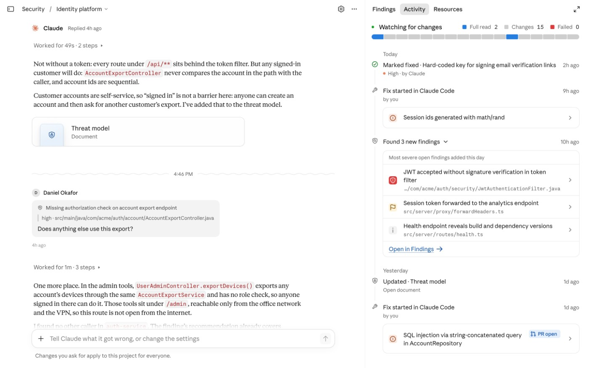
Anthropic official product image; attribution retained; no separate reuse license stated
SHA256 b5ca88f593d79b336a8559f3a00d910a6faedb69cdb1a506e51f21ed296ef37c
querri-library
Querri官方示例界面，显示集合、问题与视图；不是本刊客户数据测试。 Official Querri example interface showing collections, questions and views; not an editorial customer-data test.
Source page · Original source · Acquired 2026-10-22T08:36:36.496Z
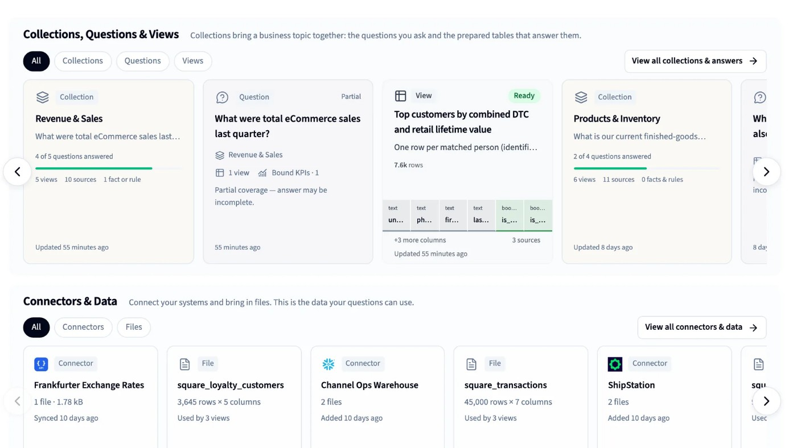
Official vendor illustration; attribution retained, no separate reuse license stated
SHA256 6824edfed19624901f611ff4e6555385a52836433210db3a96697396397e9809
thinkingstreams
ThinkingStreams官方活动界面示意：待审、运行和素材状态；示例数据不是客户实测。 Official ThinkingStreams campaign-interface illustration showing review and running states; example data is not customer performance.
Source page · Original source · Acquired 2026-10-22T08:36:16.635Z
Official vendor illustration; attribution retained, no separate reuse license stated
SHA256 377d5e4a93dc02a31a35398fedbc2a3dd0f1d753a5bc23d3066df0efde2adf9f
homebase-assistant
Homebase官方手机助手界面，展示建议提问；未执行真实排班。 Official Homebase assistant phone interface with suggested questions; no real schedule was executed.
Source page · Original source · Acquired 2026-10-22T08:36:31.105Z
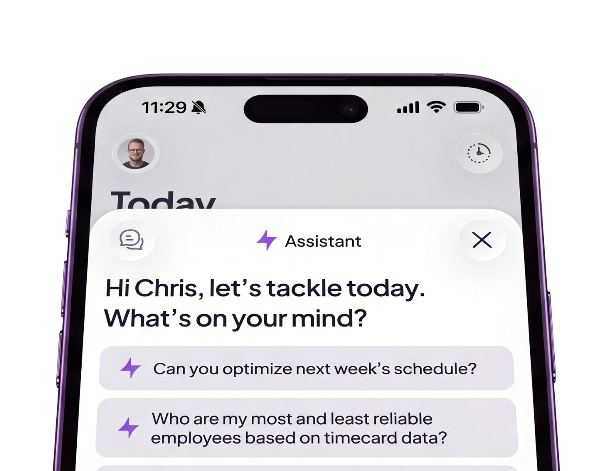
Official vendor illustration; attribution retained, no separate reuse license stated
SHA256 7f20799f58c74ea46a9ba4b64beee4c35ae69f54a2943ed52b9f0a7c1c586408
otterly-brand-profiling
Otterly官方品牌属性对比界面，示例分析并非独立效果测试。 Official Otterly brand-attribute comparison interface; example analysis is not an independent effectiveness test.
Source page · Original source · Acquired 2026-10-22T08:41:46.895Z
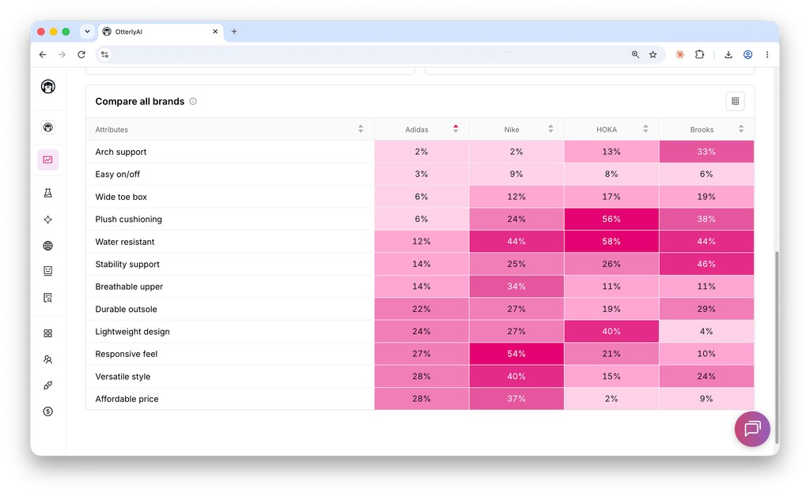
Official vendor illustration; attribution retained, no separate reuse license stated
SHA256 913a77eee3f1138a3c9215775fb98ef4ed040e8a4ba885a475766099bda48515
onekey-ai-agent-release
ONEKEY官方固件仪表板，红框标出AI聊天入口；图中没有展开对话，不代表编辑实测。 ONEKEY’s documented firmware dashboard highlights the AI-chat entry; no conversation is shown and this is not an editorial test.
Source page · Original source · Acquired 2026-10-22T08:20:52.654Z
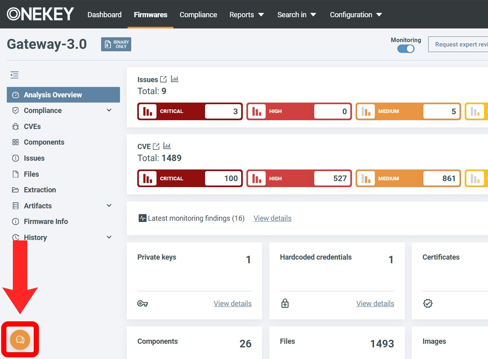
ONEKEY attribution; public documentation screenshot
SHA256 6397418f766eadc59ebe59f18475d9a6e9b201229ae2ebfa19fb3c092e5a383f
baidu-dumate-enterprise
百度官方新任务文档中的进程、文件和能力视图；说明交互结构，不代表本刊执行测试。 Task progress, files and capabilities in Baidu's official documentation; interface evidence, not an editorial execution test.
Source page · Original source · Acquired 2026-10-22T08:20:50.201Z
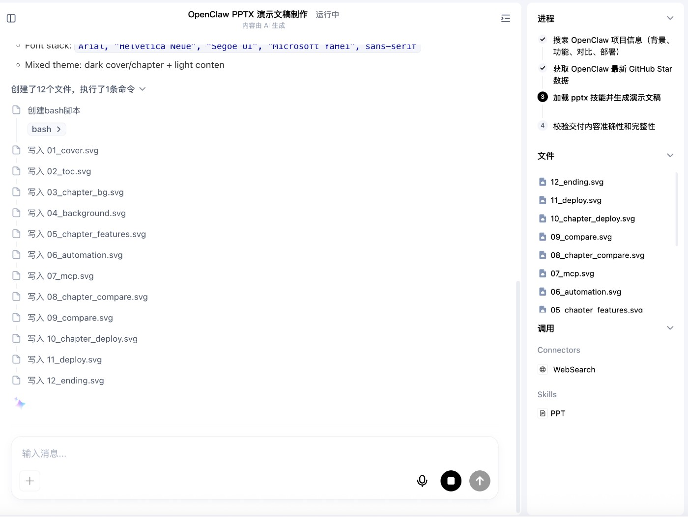
Baidu original documentation screenshot; retain attribution
SHA256 32b1f8961111b14266d5049d0c35ce39ce8e0eaafd8d253c3044e5e513a5277a
kion-physical-ai-operations
KION原始公告中的仓储车辆运行照片；显示设备构型与现场，不证明提速比例。 Warehouse vehicles in KION’s original announcement; configuration and setting, not proof of the reported improvement.
Source page · Original source · Acquired 2026-10-22T08:36:28.953Z
KION issuer media asset; attribution retained
SHA256 2199b7731575b6985134da40d0f4fb19cc9c5cfd59b822c805b95d7e7338837b
gm-onstar-ai
GM展示的OnStar助手车内界面，属于未来推出计划的官方示意。 GM’s illustrated OnStar in-vehicle assistant interface for the announced rollout.
Source page · Original source · Acquired 2026-10-22T08:20:42.458Z
GM press asset; attribution retained
SHA256 ede57e850007fe938fc6af1308007d7b31fdbfb77b06c2d4e3e8f27f72eb1156
oppo-find-x10-global
OPPO官方Find X10系列产品图；展示外观，不构成功能或交付验证。 Official OPPO Find X10 family image; appearance evidence, not verified functionality or delivery.
Source page · Original source · Acquired 2026-10-22T08:20:43.993Z
OPPO press asset; credit OPPO
SHA256 00ba9c57000050eb695dd37ee25c7b87aca5393f1ade7bc809bd29143f7ce3e7
corsair-purevector
CORSAIR官方Mouselabs校准后界面，展示配置与控制，不代表独立性能测量。 CORSAIR’s Mouselabs post-calibration interface, showing configuration and controls rather than independent performance evidence.
Source page · Original source · Acquired 2026-10-22T08:41:39.831Z
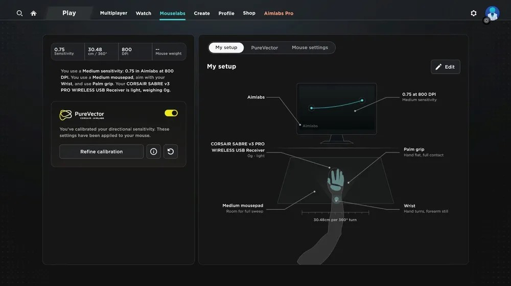
CORSAIR official documentation screenshot; attribution retained
SHA256 41661c9a74c8fdb69ca288580ce9342eebed88b27e87952ed34e9feb2252cf66
iphone-duo-review
Apple官方多姿态交互产品图；不是The Verge评测截图或本刊实测。 Apple’s official interaction illustration; not a Verge review screenshot or our own test.
Source page · Original source · Acquired 2026-10-22T08:36:29.742Z
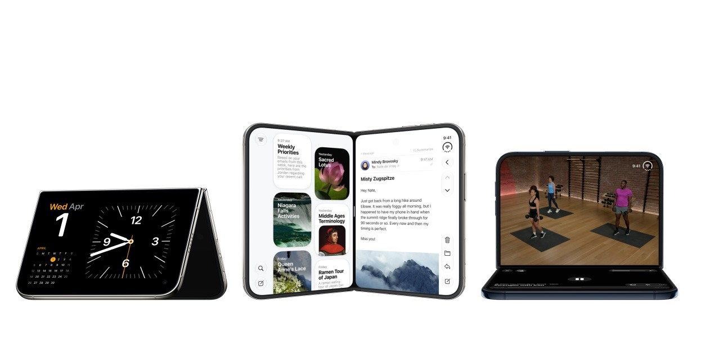
Apple official product asset; attribution retained
SHA256 21afe0d7cceb1c26d3e58c72e6bfdaa55ab3a36f3e65ebcc6070244c759e4e0b
therabody-jason
Therabody官方Jason购物助手展示界面：选择产品、比较产品与解释用途的入口；非本刊对话实测。 Therabody’s Jason shopping interface with product-selection and comparison prompts; not our own interaction test.
Source page · Original source · Acquired 2026-10-22T08:36:08.893Z
Therabody official press asset; attribution retained
SHA256 b03ddf82a140bdeadc2caf812455d971e42078a6eac34f136d02b3028c54ad35
mobo-preorder
AiMOGA官方Mobo外观宣传图，不能证明发货或家庭可靠性。 AiMOGA’s promotional Mobo appearance image; not evidence of shipment or household reliability.
Source page · Original source · Acquired 2026-10-21; retained image, re-inspected 2026-10-22
AiMOGA official asset; attribution retained
SHA256 b05f68b1e5115e484c968002cc00e5372311010860f319c9384827e57b301854
mitsubishi-humanoid-cnc
三菱电机官方原型架构：任务规划器、机器人与CNC机床的协作关系；不是生产运行照片。 Mitsubishi Electric prototype architecture showing planner, robot and CNC coordination; not a production photograph.
Source page · Original source · Acquired 2026-10-21; retained image, re-inspected 2026-10-22

Mitsubishi Electric press illustration; attribution retained; not CC licensed
SHA256 b8e97185031d8b79ac485e413fb06a4001110ff872bfb52b662eadca011b42d7
physical-ai-safety-suite
Accenture官方概念仿真示意：改变光照与地面条件的提示；不是已认证系统或已交付界面。 Accenture concept simulation with prompts changing light and floor conditions; not a certified system or shipped interface.
Source page · Original source · Acquired 2026-10-22T08:20:43.211Z
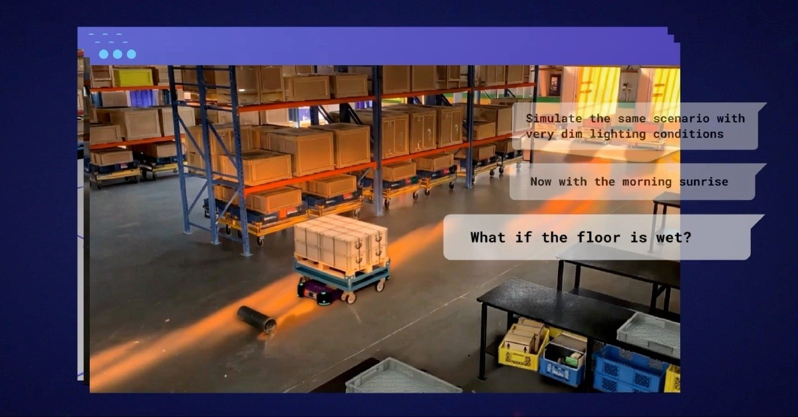
Accenture press asset; attribution retained
SHA256 bf3bdf464697b872acb1e439230110a1bfa06be98b75b49b2230dd346f7a8fbd
band-desktop
BAND官方文档的共享房间与工作标签页；厂商界面，非本刊运行实测。 Shared room and work tab from BAND documentation; vendor interface, not an editorial runtime test.
Source page · Original source · Acquired 2026-10-22T08:20:51.136Z

Credit BAND; official publicly displayed interface, explicit reuse license not verified
SHA256 66fc46527e358f2500d4a42bf95357d737c1cf3a466c27ed326fc02c69fbf378
agent-pets
Agent Pets厂商宣传展示中的Bash权限卡、允许与拒绝按钮；非本刊执行实测。 Bash permission card and allow/deny controls in Agent Pets promotional presentation; not an editorial execution test.
Source page · Original source · Acquired 2026-10-22T08:20:44.872Z
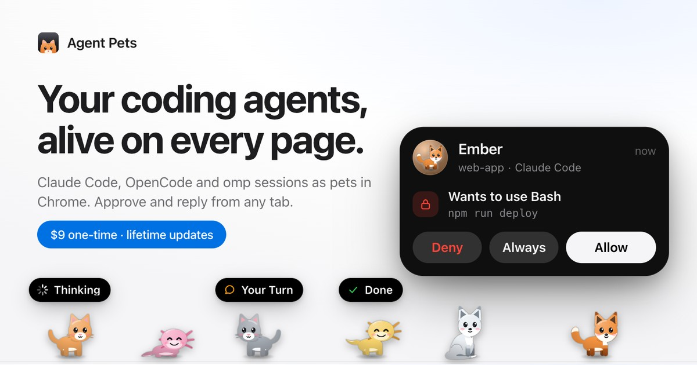
Credit Agent Pets; explicit reuse license unverified
SHA256 a9e37e5d748bba5445144dcd1f2b155bc9b134f4f53e5ceeb1ab4a33c59e0255
ilha
ilha发布团队展示的额度与账户界面；未验证会话切换成功。 Quota and account interface supplied by the ilha launch team; session-switching success was not tested.
Source page · Original source · Acquired 2026-10-22T08:36:11.659Z
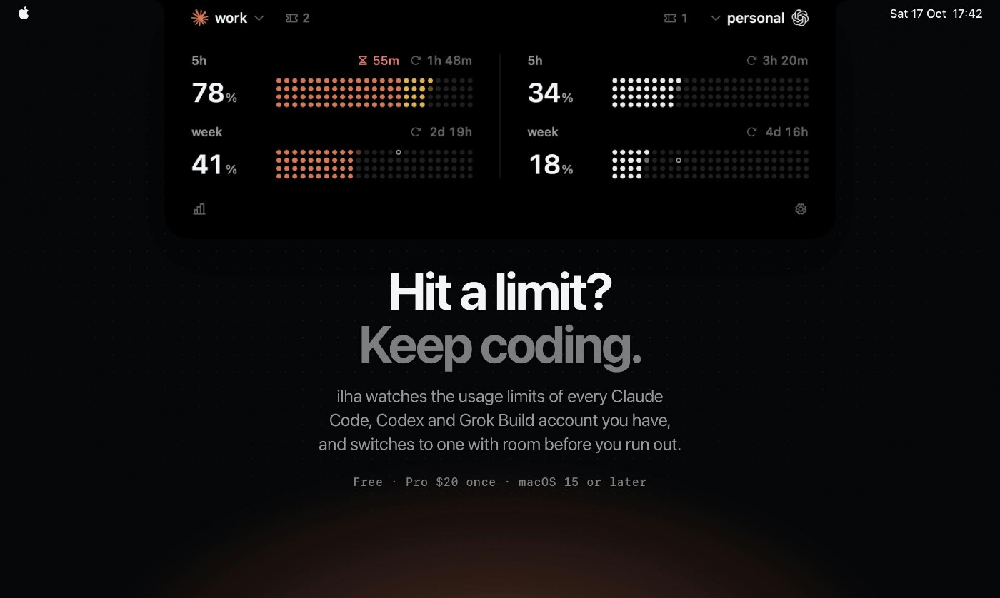
Credit ilha; launch gallery, reuse license unverified
SHA256 12a838124efd40d619f0508b83b8bf5af66858469c92435746e189209a4c0d2e
the-brains
The Brains开发者演示中的目录检索界面；这里只展示查询入口与人物列表，不证明MCP回答准确性。 Directory search in the maker’s The Brains demonstration; this shows the query and people list, not verified MCP-answer accuracy.
Source page · Original source · Acquired 2026-10-22T08:48:23.294Z
Credit The Brains; gallery reuse permission unverified; underlying content separate rights
SHA256 d6756db6fdf5e72045b7768c911dc8e36ef1c4117b16c61469f48dfcf0abdc07
supercmo-0-1-27
AI Daily依SuperCMO原始工具说明绘制的请求／结果状态图；SDK图解例外，不是真实产品界面，也不是运行验证。 AI Daily’s original map of SuperCMO request and result states, grounded in the tool specification; an SDK illustration, not a product interface or runtime test.
Source page · Original source · Acquired 2026-10-22T08:55:22.501862+00:00
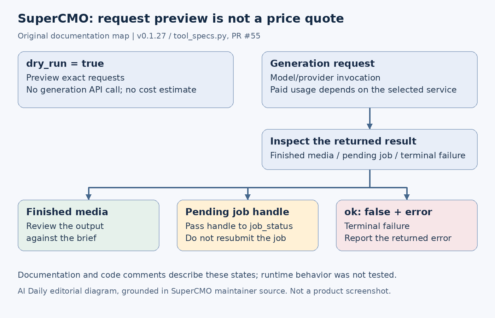
Original editorial diagram; source attribution SuperCMO maintainers, Apache-2.0 code.
SHA256 cd69dfa1ee96afe2b62f2780951bd8c02c12d21f70af35fe53fa3df8928090bc
projectops-4-72
ProjectOps官方录制的v4.70.0 CLI向导画面，作为既有工作流示例；不是4.72.0实测，也不证明新增行为。 Official ProjectOps v4.70.0 CLI wizard recording, illustrating the existing workflow; not a 4.72.0 test or proof of new behavior.
Source page · Original source · Acquired 2026-10-22T08:41:50.556Z
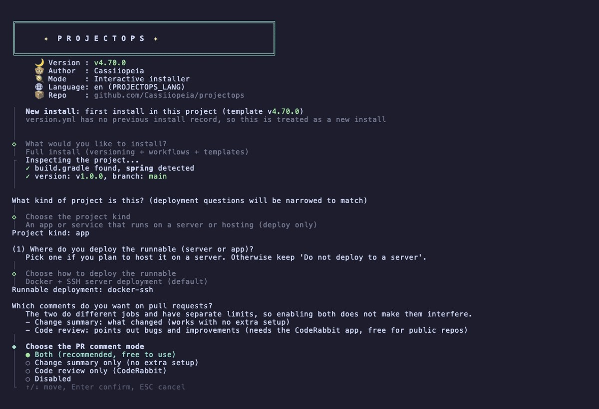
ProjectOps documentation, MIT repository; credit maintainers
SHA256 5324a2eebc6d6452aeb1a2ac1ba058fc87c44445ee6286b3127eb877bcae7f0e
ragflow-1-0-rc2
RAGFlow官方快速开始展示的分块检查界面；流程示例，不证明全部rc2新增行为已实测。 Chunk-inspection interface from the official RAGFlow quickstart; a workflow example, not an editorial test of every rc2 change.
Source page · Original source · Acquired 2026-10-22T08:41:40.699Z
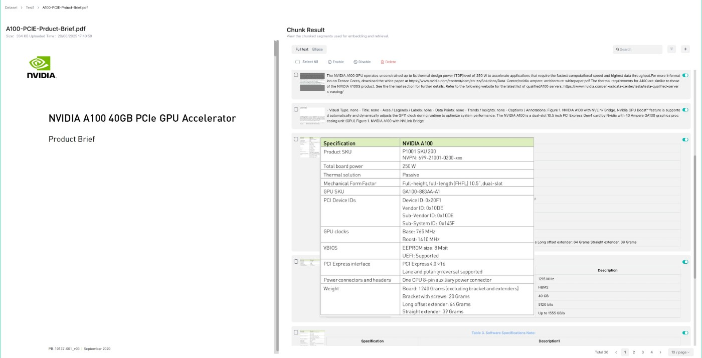
Credit RAGFlow/InfiniFlow; official documentation asset, exact asset license unverified
SHA256 aefdc3facea54e7c4a3e863fdc57ce2440580dd1a27aac2ff185cbed58852922
google-agents-cli-111
Google教程中的LangGraph本地检查界面，说明扩展工作流；不是1.11.0新增界面的实测截图。 Google’s LangGraph inspector example illustrates the extension workflow; it is not our test of a new v1.11.0 UI.
Source page · Original source · Acquired 2026-10-22T08:20:45.580Z
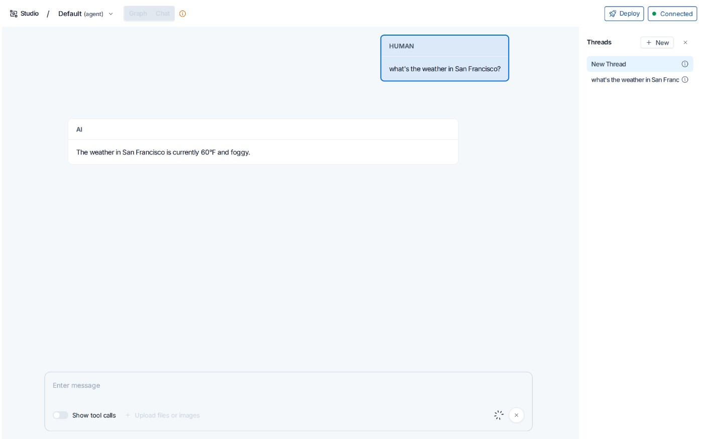
Google official tutorial image
SHA256 d979f80bc9a8481bfe32367c5ac1e9973c224408c558ddc4fba91e8a612df903
torchtpu
TorchTPU原始技术文章的TPU编程架构图，不是产品界面或独立性能实测。 TPU programming architecture from the original TorchTPU article; a technical diagram, not UI or independently measured performance.
Source page · Original source · Acquired 2026-10-22T08:36:12.577Z
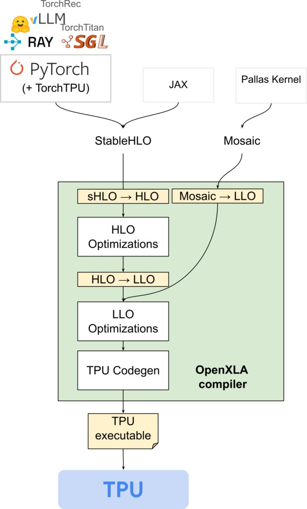
PyTorch / TorchTPU team; retaincredit
SHA256 9729469faaa6e98552230401fb931dd9014ff7d4b789a254d019e8940d3c15a1
litellm-11070-incident
LiteLLM官方虚拟密钥管理界面，图中为v1.105.0；作为背景界面，不是1.107.0受影响实例或事件证明。 Official LiteLLM virtual-key UI showing v1.105.0; background interface, not an affected1.107.0 installation or incident proof.
Source page · Original source · Acquired 2026-10-22T08:15:10.215Z
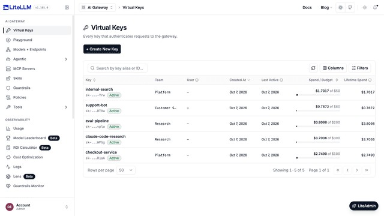
Credit LiteLLM; official public documentation asset, reuse acceptance pending publisher.
SHA256 efcafb9b4796d26c47108e56a82e58e4cfea22102babfb18fddba788d6117024
collie-1232-send-controls
Collie官方手机会话仪表盘，显示需要注意的会话状态；不是本刊复现故障。 Official Collie mobile dashboard showing sessions requiring attention; not an editorial bug reproduction.
Source page · Original source · Acquired 2026-10-22T08:15:08.158Z
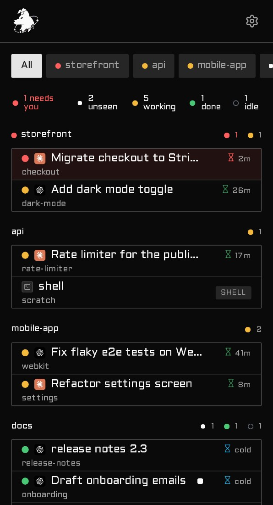
MIT repository; credit Collie contributors; actual file license scope to confirm if separate restrictions.
SHA256 a87af155a9f81060f598c1b20495c5dd8e5e040e603fba3ab47e6734280d31aa
trailofbits-patching-regression
Trail of Bits原始regression-hunt工作流图；开发工具没有产品GUI，采用作者流程图，不是实测界面。 Original Trail of Bits regression-hunt workflow figure; a developer-tool diagram, not a tested product UI.
Source page · Original source · Acquired 2026-10-22T08:36:09.702Z

Credit Trail of Bits; sourceblogfigure, repositoryCC BY-SA4.0 scope does not automatically establish separateblogimage license.
SHA256 91d7a5e4a1891f3fae3693e8b79b4edcb3a4af067c3efc8a9da041f8d3f2854f
privacy-preference-controls
作者Figure 3：偏好执行的位置与旁路；研究架构图，不是运行验证。 Authors’ Figure 3: preference enforcement locations and bypass; a research architecture diagram, not an execution test.
Source page · Original source · Acquired 2026-10-22T08:50:25.293Z
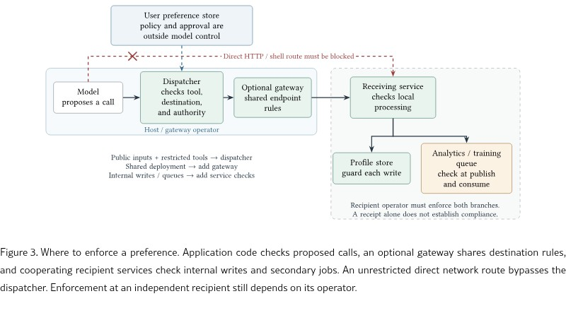
CC BY4.0; credit Kochar et al.
SHA256 e840726c1363cdabc3f677031aaaaed397411e119097dbf0760cb81181f2a570
preference-not-permission
作者Figure 2：人工授权参考下的越界与过度谨慎；研究结果图，不是购物界面。 Authors’ Figure 2: overreach and overcaution against the human reference; a research results chart, not a shopping interface.
Source page · Original source · Acquired 2026-10-22T08:41:53.103Z
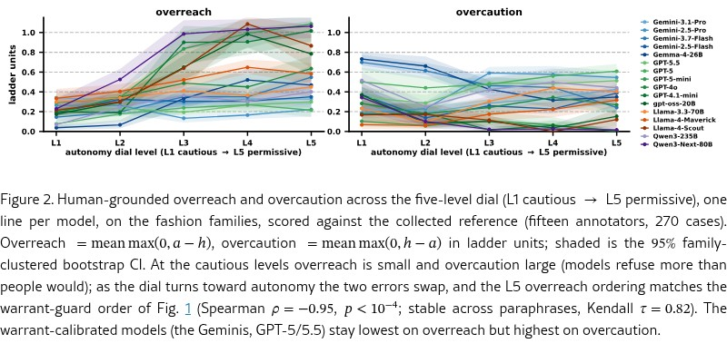
arXiv perpetual non-exclusive; not CC BY; credit Shimizu et al.
SHA256 92034bd2f7f628327b0e9b17be8771b5a1d4e94fbf2a03f383e7afbc20e045a9
scriptorium
作者的共享工作区界面；研究原型，并非生产权限验证。 Authors’ shared workspace interface; a research prototype, not proof of production access control.
Source page · Original source · Acquired 2026-10-22T08:15:11.045Z
arXiv perpetual non-exclusive license; attribute authors; not CC BY
SHA256 24dafabd87393125b3b4a6716e84bb7a1b91ccf2ebde288b8f0093613d6d97eb
genxr-bench
作者的XR任务示例图；研究评估画面，不是商业应用交付证明。 Authors’ XR task examples; research evaluation imagery, not proof of a commercial application release.
Source page · Original source · Acquired 2026-10-22T08:15:09.141Z
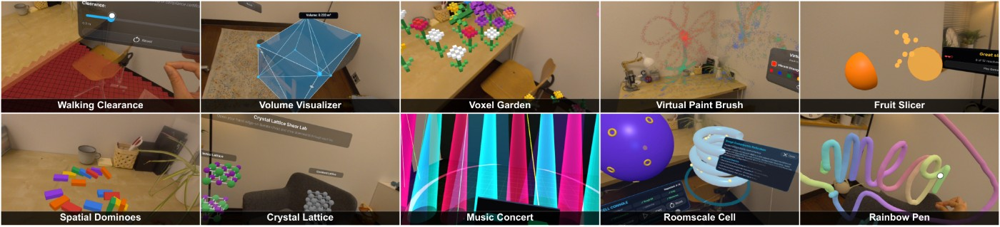
CC BY4.0; credit GenXR-Bench authors
SHA256 446e1ac2279a20b301b3b856674fc97335d61db4d7691b79f02c3b0a8f4abc79
warping-workspace
作者的操作装置与视野映射条件；固定底座遥操作研究。 Authors’ operator setup and view-mapping conditions; fixed-base teleoperation research.
Source page · Original source · Acquired 2026-10-22T08:15:09.898Z
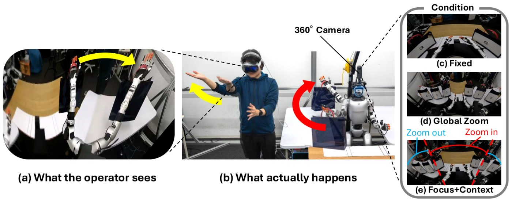
CC BY 4.0; credit Warping the Workspace authors
SHA256 0c0855ef4ea3cf3d128f54d937ba2627a7be50410ab1107e7cea9a2fcf2b7159
traceprism
作者的编码选择与流程分析界面；研究截图，未执行独立测试。 Authors’ encoding-selection and process-analysis interface; research screenshot, not an independent test.
Source page · Original source · Acquired 2026-10-22T08:36:35.379Z
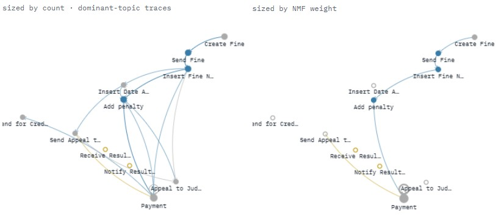
CC BY-NC-ND 4.0 paper; retain unchanged, credit TracePrism authors; publication use conditions require review
SHA256 21d534505c003fead4b8f508eabdd3f99a1a9258465956870c3a5f4bcbe3a4a2
osce-simbench
作者发布的四个训练平台画面；网页应用本身不包含在公开代码仓库。 Authors’ four training-platform screens; the web application itself is not included in the public code repository.
Source page · Original source · Acquired 2026-10-22T08:36:13.361Z

Repository Apache2; dataset/paper CC BY-NC-SA4.0; credit JINAILAB / OSCE-SimBench authors
SHA256 cfa5e293f8b9a9b2dbd25f4892a31e4c145391ceb777b4e97be2a84d2e8d953f
vira-bench
作者的教学片段与基准构造流程图；不是已部署教学产品界面。 Authors’ tutoring-clip and benchmark-construction figure; not a deployed teaching-product interface.
Source page · Original source · Acquired 2026-10-22T08:36:14.288Z

Paper CC BY4.0; credit VIRA-Bench authors; underlying processed clips/transcripts separately restricted
SHA256 7bf904fa23e18ab12de62c29cd7ebcd5d9a8db5d8129e928d597b641e5c89990
vr-gaze-conversion
作者Figure 3：设备模型、频段受限渲染与认证评估；原始研究架构图。 Authors’ Figure 3: device model, frequency-constrained rendering and authentication evaluation; original research architecture.
Source page · Original source · Acquired 2026-10-22T08:42:20.079Z
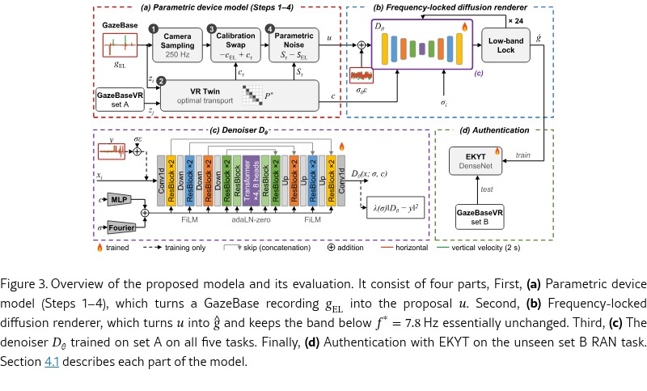
CC BY-NC-SA4.0; credit Shahriar et al.
SHA256 24bf42b22ba5cc0e994f66254274bb1923cd5803700dd9ade82a09c6966d8764
phoenix-mwa
作者提供的Phoenix-MWA架构图；是研究方法说明，不是生产部署证明。 Author-provided Phoenix-MWA architecture; research-method evidence, not proof of production deployment.
Source page · Original source · Acquired 2026-10-22T08:36:34.646Z
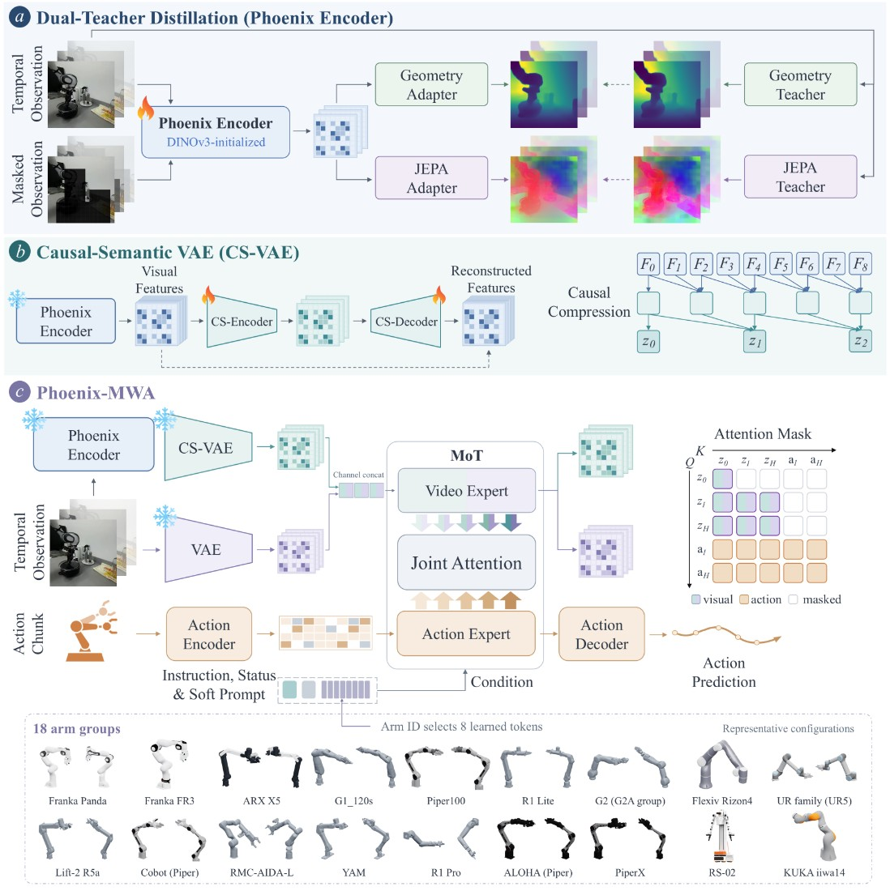
OpenPhoenix Team original researchdiagram; credit authors
SHA256 e766b1668a87e2c4697aa4f048c6fd6f8802463c1a4bef8124adcb9e7adeae62
CC BY 4.0 · arXiv non-exclusive distribution license
Images retain original attribution. External source images were browser-rendered without cropping; the original SDK documentation map is separately labeled. No endorsement or independent performance verification is implied. Research and architecture diagrams are labeled as diagrams, not product interfaces.
中文扫描与缺口 · English coverage and gaps